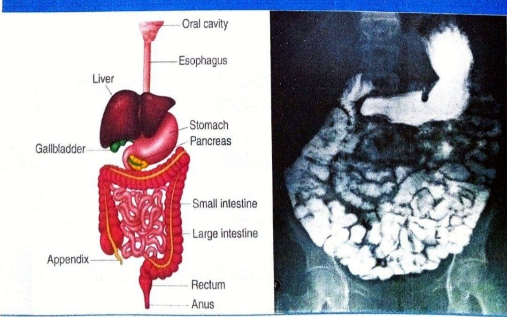
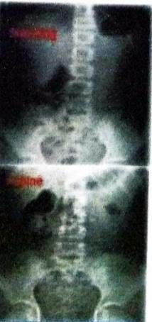
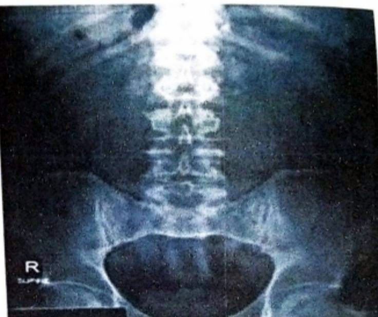
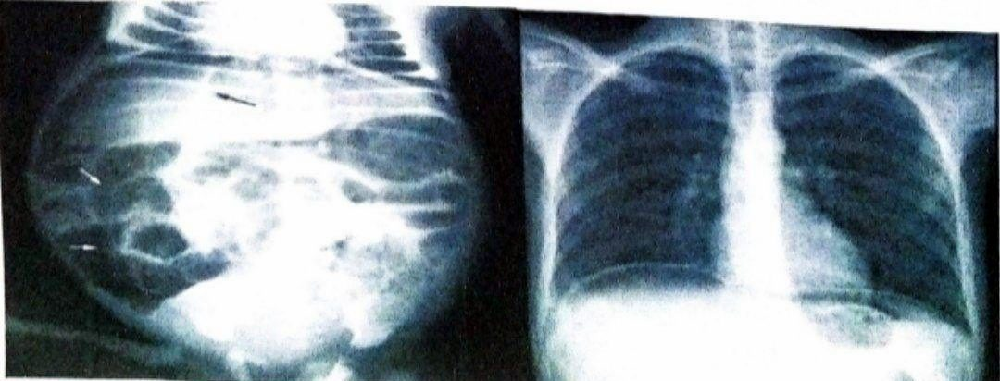
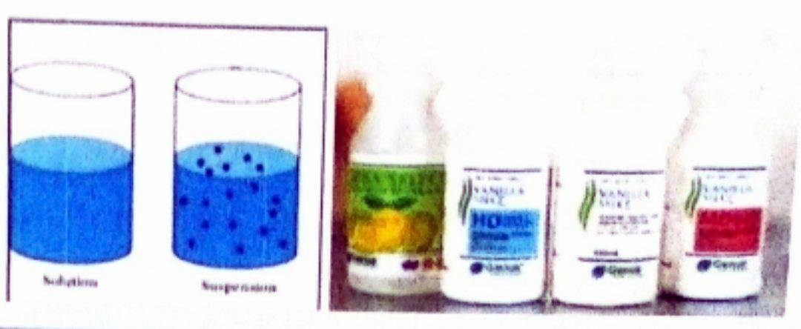
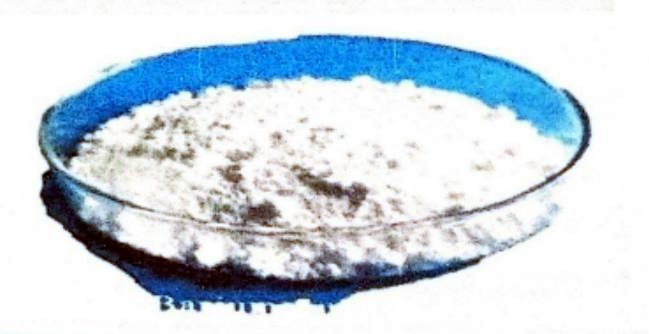
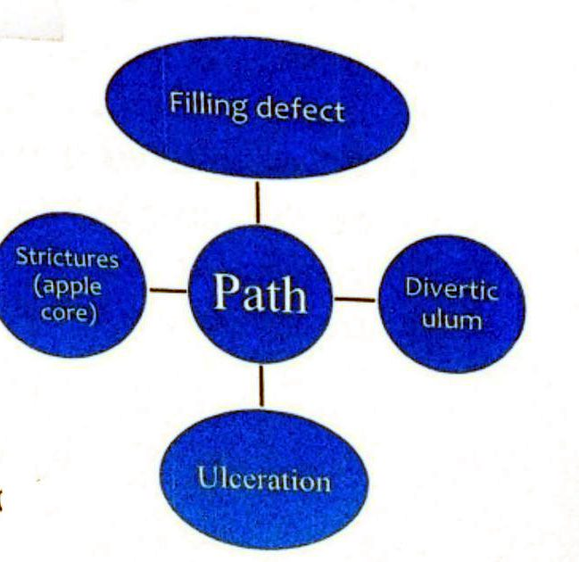
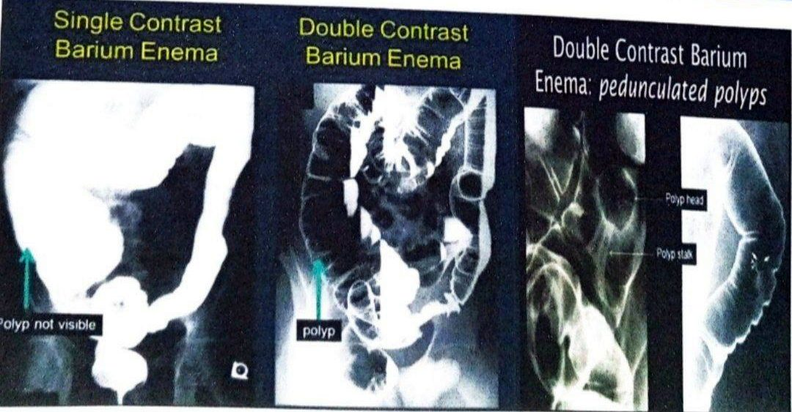

طرق تصوير الجهاز الهضميMethods of Imaging the GIT
نظري · م02 · 7.3 دقيقةأقسام المحاضرة (10)
- أهداف المحاضرةAims of This Session
- تشريح الجهاز الهضميAnatomy of GIT
- طرق تصوير الجهاز الهضميMethods of Imaging the GIT
- الصورة البسيطةPlain Film
- مقدمة عن مواد التباينIntroduction to Contrast Media
- مواد التباين الذائبة في الماءWater-Soluble Contrast Agents
- كبريتات الباريومBarium Sulfate
- استعمالات الباريوم وتراكيزهBarium Uses & Concentrations
- مزايا الباريوم وعيوبهBarium: Pros & Cons
- الغازات والتباين المزدوجGases & Double Contrast
أهداف المحاضرةAims of This Session
- 1. To know the radiological anatomy of the GI tract.معرفة التشريح الشعاعي للجهاز الهضمي.
- 2. To know radiology modalities used in GI tract imaging.معرفة وسائل التصوير الشعاعي المستعملة في تصوير الجهاز الهضمي.
- 3. To know indications and contraindications of each modality.معرفة دواعي استعمال كل وسيلة وموانعها.
- 4. To know advantages and disadvantages of each modality.معرفة مزايا كل وسيلة وعيوبها.
تشريح الجهاز الهضميAnatomy of GIT
- • Esophagus.المريء.
- • Stomach: fundus, body, LCS, GCS, Pylorus (pyloric antrum & pyloric canal).المعدة: القاع، والجسم، والانحناء الصغير (LCS)، والانحناء الكبير (GCS)، والبوّاب (الغار البوّابي والقناة البوّابية).
- • Duodenum: 1st to 4th portion.الاثنا عشري: من الجزء الأول إلى الجزء الرابع.
- • Small intestine: jejunum & ileum.الأمعاء الدقيقة: الصائم واللفائفي.
- • Colon: cecum, appendix, AC, TC, DC, SC, rectum.القولون: الأعور، والزائدة الدودية، والقولون الصاعد (AC)، والمستعرض (TC)، والنازل (DC)، والسيني (SC)، والمستقيم.
- • Upper GI: esophagus, stomach, and duodenum.الجهاز الهضمي العلوي: المريء والمعدة والاثنا عشري.
- • Lower GI: jejunum, ileum and colon.الجهاز الهضمي السفلي: الصائم واللفائفي والقولون.

طرق تصوير الجهاز الهضميMethods of Imaging the GIT
- 1. Plain filmالصورة البسيطة (Plain film): صورة شعاعية بدون مادة تباين.
- 2. Contrast Study*: Barium swallow, Barium meal, Barium follow-through, Small bowel enema and Barium enema.الفحص بمادة التباين*: بلع الباريوم، ووجبة الباريوم، ومتابعة مرور الباريوم، وحقنة الأمعاء الدقيقة (Small bowel enema)، وحقنة الباريوم الشرجية.
- 3. Ultrasound (US): Transabdominal and Endosonographic.الأمواج فوق الصوتية (السونار) US: عبر جدار البطن، والسونار بالمنظار (Endosonography).
- 4. Computed tomography (CT)*.التصوير المقطعي المحوسب (المفراس) CT*.
- 5. Magnetic resonance imaging (MRI).التصوير بالرنين المغناطيسي MRI.
- 6. Angiography.تصوير الأوعية الدموية.
- 7. Radionuclide imaging.التصوير بالنظائر المشعة (الطب النووي).
الصورة البسيطةPlain Film
كيف تقيّم الصورةHow To Assess The Film
- • Basic Details: name, age, gender, date and appearance of the image (well or poorly penetrated).البيانات الأساسية: الاسم، والعمر، والجنس، والتاريخ، ومظهر الصورة (جيدة الاختراق أو ضعيفة الاختراق).
- • Establish the projection of the film (AP) and whether it is supine or erect. ([t important to choose the appropriate x-ray position because: for example in the erect position we can see if there is air under the diaphragm, which indicates perforation.حدّد إسقاط الصورة (AP)، وهل هي بوضعية Supine (الاستلقاء على الظهر) أو Erect (الوضع القائم). (من المهم اختيار الوضعية المناسبة، لأنه مثلاً في الوضع القائم نستطيع أن نرى هل يوجد هواء تحت الحجاب الحاجز، وهذا يدل على انثقاب في الأمعاء.
- • In such cases we should ask for KUB or abdominal X-ray + chest x-ray)في مثل هذه الحالات نطلب صورة KUB (صورة البطن البسيطة للكلى والحالبين والمثانة) أو صورة شعاعية للبطن، مع صورة شعاعية للصدر.)
- • Check left and right.تأكّد من الجهتين اليمنى واليسرى.
- • Check Bone, Soft tissue/Solid Organs, Calcification, Gasافحص العظام، والأنسجة الرخوة/الأعضاء الصلبة، والتكلسات، والغازات.

ماذا تُظهر صورة البطن البسيطةAbdominal plain film
- • Radiopaque calculi.الحصى الظليلة (المعتمة للأشعة).
- • Calcifications.التكلسات.
- • Gas pattern.توزيع الغازات.
- • Foreign bodies.الأجسام الغريبة.
- • Intraperitoneal fluids.السوائل داخل الصفاق (داخل جوف البطن).
- • Intraperitoneal air.الهواء داخل الصفاق (الهواء الحر).
- • Organomegaly.تضخّم الأعضاء.
- • Bony abnormalities.التشوهات العظمية.

الهواء داخل الصفاقIntraperitoneal air

مقدمة عن مواد التباينIntroduction to Contrast Media
Contrast agents provides a road map
مواد التباين (الصبغة) توفّر خريطة طريق:
- • See the site of the lesionرؤية موقع الآفة.
- • Predict the nature of the lesionتوقّع طبيعة الآفة.
Endoscope can not see
المنظار لا يستطيع أن:
- • See outside of the bowel lumen.يرى ما هو خارج تجويف الأمعاء.
- • Bypass tight strictures.يتجاوز التضيّقات الشديدة.
- • Determine the length of the lesionيحدّد طول الآفة.
- • Reach some parts of the bowel.يصل إلى بعض أجزاء الأمعاء.
مواد التباين الذائبة في الماءWater-Soluble Contrast Agents
The two agents in most widespread use are:
المادتان الأكثر استعمالاً هما:
Although primarily used in diagnosis, its high osmolarity is exploited to help achieve bowel catharsis in CT colonography, and to diagnose and treat meconium ileus and adhesive small bowel obstruction.
مع أنه يُستعمل أساساً في التشخيص، يُستفاد من أسموليته العالية للمساعدة في تنظيف الأمعاء في تصوير القولون بالمفراس، ولتشخيص وعلاج انسداد العقي وانسداد الأمعاء الدقيقة بسبب الالتصاقات.
دواعي الاستعمالIndications
- 1. Suspected perforation.الاشتباه بوجود انثقاب.
- 2. Meconium ileus.انسداد العقي.
- 3. To identify bowel lumen and communications with bowel lumen on CT. (e.g. 30 mL of Gastrografin in 1 L of flavored drink) is used to minimize beam hardening artifact.لتحديد تجويف الأمعاء والاتصالات معه في صور المفراس (مثلاً 30 مل من Gastrografin في لتر واحد من شراب منكّه)، ويُستعمل بهذا التخفيف لتقليل تشوّه تصلّب الحزمة.
- 4. Low osmolar contrast media (LOCM) is advised if the patient is vulnerable to aspiration.يُنصح بمواد التباين منخفضة الأسمولية (LOCM) إذا كان المريض معرّضاً لاستنشاق المادة إلى مجرى التنفس.
المضاعفاتComplications
- 1. (HOCM) can precipitate pulmonary oedema if aspirated (not LOCM).المواد عالية الأسمولية (HOCM) قد تسبّب وذمة رئوية إذا استُنشقت (وليس LOCM).
- 2. HOCM can cause hypovolemia due to the hyperosmolality of the contrast media drawing fluid into the bowel (not LOCM).HOCM قد تسبّب نقص حجم الدم، لأن أسموليتها العالية تسحب السوائل إلى داخل الأمعاء (وليس LOCM).
- 3. May precipitate in hyperchlorhydria gastric acid.قد تترسّب في حمض المعدة عند فرط الحموضة.
كبريتات الباريومBarium Sulfate
The use of barium with standard X-rays contributes to the visibility of various characteristics of the GI tract.
استعمال الباريوم مع الأشعة السينية الاعتيادية يساعد على إظهار الخصائص المختلفة للجهاز الهضمي.
Barium suspension is made up from finely ground barium sulfate (BaSO4).
معلّق الباريوم يُصنع من كبريتات الباريوم المطحونة ناعماً (BaSO4).
الخواصProperties
- • Atomic number 56 (makes it radiopaque when exposed to x-ray)العدد الذري 56 (وهذا يجعله ظليلاً، أي معتماً للأشعة السينية).
- • Nontoxic. Non absorbable, Non degradableغير سام، ولا يُمتص، ولا يتحلل.
- • Water insoluble.لا يذوب في الماء.
- • In form of suspension and suspension settles so, need shaking before use.يكون على شكل معلّق، والمعلّق يترسّب؛ لذلك يجب رجّه قبل الاستعمال.
Barium is a dry, white powder that is mixed with water to make barium liquid.
الباريوم مسحوق أبيض جاف يُخلط بالماء لصنع سائل الباريوم.
الباريوم في الجهاز الهضميBarium (gastro-intestinal)
- • Barium is an X-ray absorber and appears white on X-ray film.الباريوم يمتص الأشعة السينية ويظهر أبيض على الصورة.
- • forms available are powder, suspension and paste.أشكاله المتوفرة: مسحوق، ومعلّق، ومعجون.
When instilled into the GI tract, barium coats the inside wall of the esophagus, stomach, large intestine, and/or small intestine so that the inside wall lining, size, shape and contour are visible on X-ray.
عند إدخاله إلى الجهاز الهضمي، يغطّي الباريوم الجدار الداخلي للمريء أو المعدة أو الأمعاء الغليظة أو الدقيقة، فتظهر بطانة الجدار الداخلي وحجمه وشكله وحدوده على الصورة الشعاعية.


لماذا الباريوم في فحوصات الجهاز الهضمي (مهم جداً)WHY BARIUM IN GI SERIES
Barium sulphate suspensions have better coating properties than the iodinated contrast media, and tend to form thin layers spread over the lining of the gut.
معلّقات كبريتات الباريوم أفضل في تغطية الجدار من مواد التباين اليودية، وتميل إلى تكوين طبقات رقيقة منتشرة على بطانة الأمعاء.
استعمالات الباريوم وتراكيزهBarium Uses & Concentrations

We have different concentrations of barium sulphate as follow:
لدينا تراكيز مختلفة من كبريتات الباريوم كما يأتي:
- • (W/V) - Weight/Volume represent concentration of the solution.(W/V) = وزن/حجم، ويمثّل تركيز المحلول.
- • 100 % W/V - means 100 gram barium in 100 mL of solution.100% وزن/حجم يعني 100 غرام من الباريوم في 100 مل من المحلول.
- • Route: Orally & Rectally.طريق الإعطاء: عن طريق الفم وعن طريق المستقيم.
- • Method: Single contrast & Double contrast study.الطريقة: فحص بتباين مفرد (Single contrast)، وفحص بتباين مزدوج (Double contrast).
مزايا الباريوم وعيوبهBarium: Pros & Cons
المزاياAdvantages
- • The main advantage of barium over water-insoluble (احتمال خطأ: الأصح: water-soluble — الذائبة بالماء) contrast agents is that it results in better coating and better mucosal detail.الميزة الرئيسة للباريوم على مواد التباين «غير الذائبة في الماء» أنه يعطي تغطية أفضل وتفاصيل أوضح للغشاء المخاطي.
- • Low cost.كلفته منخفضة.
العيوبDisadvantages
- • Precludes accurate subsequent abdominal CT interpretation with potential delays of up to 2 weeks to allow satisfactory clearance of the barium.يمنع القراءة الدقيقة لمفراس البطن الذي يُجرى بعده، وقد يؤخّره إلى أسبوعين حتى يخرج الباريوم بشكل كافٍ.
- • It is advised that CT and/or US are performed before the barium study.يُنصح بإجراء المفراس و/أو السونار قبل فحص الباريوم.
- • High morbidity associated with barium escape to the peritoneal cavity if there is perforated intestine.ارتفاع المراضة عند تسرّب الباريوم إلى جوف الصفاق إذا كانت الأمعاء مثقوبة.
المضاعفاتComplications
متى نستعمل المواد الذائبة في الماء بدل الباريومWhen to use water-soluble contrast instead
In cases where barium contraindicated or carry a higher risk like suspicion of perforation or aspiration we will use (water soluble contrast media)*.
في الحالات التي يكون فيها الباريوم ممنوعاً أو أعلى خطورة، مثل الاشتباه بالانثقاب أو الاستنشاق، نستعمل مواد التباين الذائبة في الماء*.
دواعي الاستعمالIndications
- • Suspected perforation and suspected aspiration.الاشتباه بالانثقاب، والاشتباه بالاستنشاق.
- • Intestinal obstruction or sever constipation.انسداد الأمعاء أو الإمساك الشديد.
- • To distinguish bowel from other structures on CT-scan.تمييز الأمعاء عن التراكيب الأخرى في صور المفراس.
الغازات والتباين المزدوجGases & Double Contrast
GASES USED WITH BARIUM: in certain situations, we use gases with the barium study why???
الغازات المستعملة مع الباريوم: في حالات معيّنة نستعمل الغازات مع فحص الباريوم، فلماذا؟
- • using two forms of contrast make the structures easier to see.لأن استعمال نوعين من التباين يجعل رؤية التراكيب أسهل.
As you know gases (air, CO2) are negative contrast agents (radiolucent), and barium are positive contrast agents (radiopaque). together give more details of the structure examined.
كما تعلم، الغازات (الهواء، CO2) مواد تباين سالبة (شفافة للأشعة)، والباريوم مادة تباين موجبة (ظليلة)، ومعاً يعطيان تفاصيل أكثر عن التركيب المفحوص.

المحاضرة مسموعة
نص الأستاذ بالإنكليزي مثل الأصل · 7.3 دقيقة. اضغط أي جملة تسمعها، أو مصطلح منقّط تسمع لفظه ومعناه.
Aims of This Sessionأهداف المحاضرة
Aims of This Session
To know the radiological anatomy of the GI tract.
To know radiology modalities used in GI tract imaging.
To know indications and contraindications of each modality.
To know advantages and disadvantages of each modality.
Anatomy of GITتشريح الجهاز الهضمي
Anatomy of GIT
Esophagus.
Stomach: fundus, body, LCS, GCS, Pylorus (pyloric antrum & pyloric canal).
Duodenum: 1st to 4th portion.
Small intestine: jejunum & ileum.
Colon: cecum, appendix, AC, TC, DC, SC, rectum.
Upper GI: esophagus, stomach, and duodenum.
Lower GI: jejunum, ileum and colon.
Methods of Imaging the GITطرق تصوير الجهاز الهضمي
Methods of Imaging the GIT
Plain film
Contrast Study*: Barium swallow, Barium meal, Barium follow-through, Small bowel enema and Barium enema.
Ultrasound (US): Transabdominal and Endosonographic.
Computed tomography (CT)*.
Magnetic resonance imaging (MRI).
Angiography.
Radionuclide imaging.
Plain Filmالصورة البسيطة
Plain Film
How To Assess The Film
Basic Details: name, age, gender, date and appearance of the image (well or poorly penetrated).
Establish the projection of the film (AP) and whether it is supine or erect. ([t important to choose the appropriate x-ray position because: for example in the erect position we can see if there is air under the diaphragm, which indicates perforation.
In such cases we should ask for KUB or abdominal X-ray + chest x-ray)
Check left and right.
Check Bone, Soft tissue/Solid Organs, Calcification, Gas
Abdominal plain film
Radiopaque calculi.
Calcifications.
Gas pattern.
Foreign bodies.
Intraperitoneal fluids.
Intraperitoneal air.
Organomegaly.
Bony abnormalities.
Intraperitoneal air
Rigler's sign: air outlining both the inside and outside walls of the bowel. It is seen with lang amounts of pneumoperitoneum (> 1000 mL).
Introduction to Contrast Mediaمقدمة عن مواد التباين
Introduction to Contrast Media
Contrast agents provides a road map
See the site of the lesion
Predict the nature of the lesion
Endoscope can not see
See outside of the bowel lumen.
Bypass tight strictures.
Determine the length of the lesion
Reach some parts of the bowel.
Water-Soluble Contrast Agentsمواد التباين الذائبة في الماء
Water-Soluble Contrast Agents
The two agents in most widespread use are:
Gastrografin is an aniseed-tasting, high osmolarity contrast agent, containing a wetting agent for oral or rectal use.
Although primarily used in diagnosis, its high osmolarity is exploited to help achieve bowel catharsis in CT colonography, and to diagnose and treat meconium ileus and adhesive small bowel obstruction.
Gastromiro, a low osmolarity contrast agent containing iopamidol, is a more palatable orange-flavored alternative.
Indications
Suspected perforation.
Meconium ileus.
To identify bowel lumen and communications with bowel lumen on CT. (e.g. 30 mL of Gastrografin in 1 L of flavored drink) is used to minimize beam hardening artifact.
Low osmolar contrast media (LOCM) is advised if the patient is vulnerable to aspiration.
Complications
(HOCM) can precipitate pulmonary oedema if aspirated (not LOCM).
HOCM can cause hypovolemia due to the hyperosmolality of the contrast media drawing fluid into the bowel (not LOCM).
May precipitate in hyperchlorhydria gastric acid.
Barium Sulfateكبريتات الباريوم
Barium Sulfate
The use of barium with standard X-rays contributes to the visibility of various characteristics of the GI tract.
Barium suspension is made up from finely ground barium sulfate (BaSO4).
Properties
Atomic number 56 (makes it radiopaque when exposed to x-ray)
Nontoxic. Non absorbable, Non degradable
Water insoluble.
In form of suspension and suspension settles so, need shaking before use.
Barium is a dry, white powder that is mixed with water to make barium liquid.
Barium (gastro-intestinal)
Barium is an X-ray absorber and appears white on X-ray film.
forms available are powder, suspension and paste.
When instilled into the GI tract, barium coats the inside wall of the esophagus, stomach, large intestine, and/or small intestine so that the inside wall lining, size, shape and contour are visible on X-ray.
WHY BARIUM IN GI SERIES
Barium sulphate suspensions have better coating properties than the iodinated contrast media, and tend to form thin layers spread over the lining of the gut.
Barium Uses & Concentrationsاستعمالات الباريوم وتراكيزه
Barium Uses & Concentrations
We have different concentrations of barium sulphate as follow:
(W/V) - Weight/Volume represent concentration of the solution.
100 % W/V - means 100 gram barium in 100 mL of solution.
Route: Orally & Rectally.
Method: Single contrast & Double contrast study.
Barium: Pros & Consمزايا الباريوم وعيوبه
Barium: Pros & Cons
Advantages
The main advantage of barium over water-insoluble (احتمال خطأ: الأصح: water-soluble — الذائبة بالماء) contrast agents is that it results in better coating and better mucosal detail.
Low cost.
Disadvantages
Precludes accurate subsequent abdominal CT interpretation with potential delays of up to 2 weeks to allow satisfactory clearance of the barium.
It is advised that CT and/or US are performed before the barium study.
High morbidity associated with barium escape to the peritoneal cavity if there is perforated intestine.
Complications
When to use water-soluble contrast instead
In cases where barium contraindicated or carry a higher risk like suspicion of perforation or aspiration we will use (water soluble contrast media)*.
Indications
Suspected perforation and suspected aspiration.
Intestinal obstruction or sever constipation.
To distinguish bowel from other structures on CT-scan.
Gases & Double Contrastالغازات والتباين المزدوج
Gases & Double Contrast
GASES USED WITH BARIUM: in certain situations, we use gases with the barium study why???
using two forms of contrast make the structures easier to see.
As you know gases (air, CO2) are negative contrast agents (radiolucent), and barium are positive contrast agents (radiopaque). together give more details of the structure examined.
27 سؤال من نص المحاضرة، ويّا «ليش صح» بعد كل جواب.
ابدأ الاختباراضغط أي مصطلح منقّط تسمع لفظه ومعناه.
PDF ثنائي اللغة: نص الأستاذ + الترجمة + الخلاصة + الأسئلة · 1.2 MB
تحميل الملف